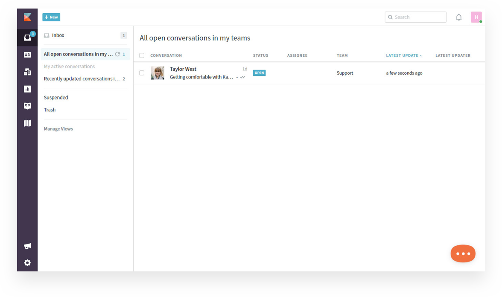
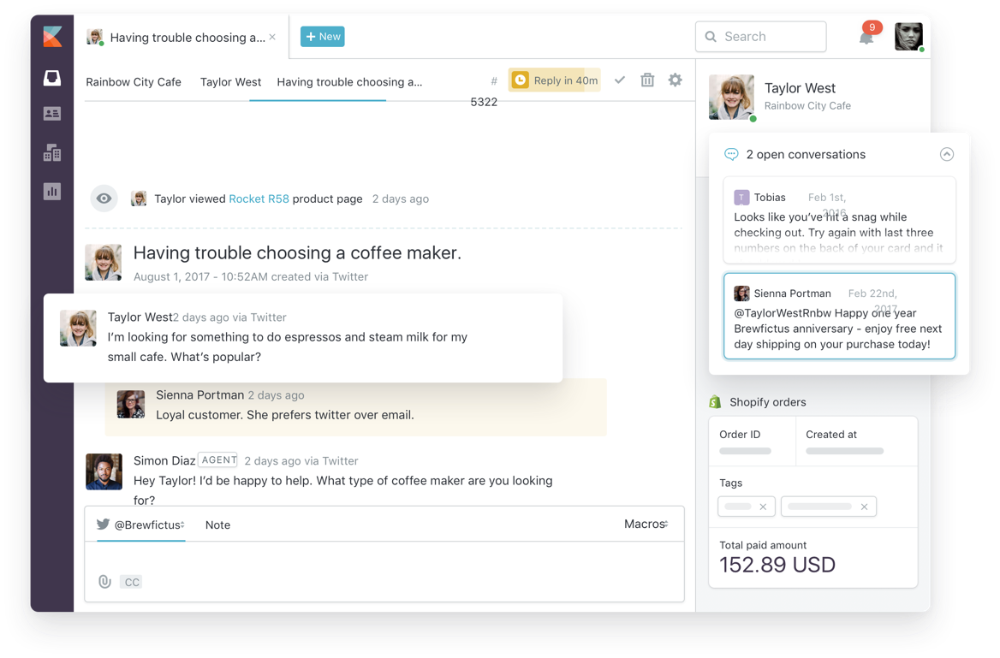

With Desk.com retiring it’s time you move to a provider that won’t stop working for you
131,000 customer agents use Kayako
Almost 20 years of history with our customers
Committed to your success
Our experts can import customer tickets, interactions, history and configurations over from Desk.com and get you set up before you can say Salesforce Service Cloud.
There are a number of reasons why you should choose Kayako as an alternative to Desk.com
Here are a few that we feel you'll agree with.
You could continue to pay extra till 2020 for features that come standard with Kayako, or you could make the switch today and save over 80% on monthly payments
Both Desk and Service Cloud follow a model that makes them expensive for growing teams. We provide you with a solution that gives your teams the features they need to deliver the best customer support.
| 1 AGENT | 3 AGENTS | 5 AGENTS | 10 AGENTS | |
|---|---|---|---|---|
| Kayako | $29 per month | $87 per month | $75 per month | $150 per month |
| Desk.com | $125 per month | $375 per month | $625 per month | $1,250 per month |
| Service Cloud | $150 per month | $450 per month | $750 per month | $1,500 per month |
| Monthly savings over Desk.com | $96 per month | $288 per month | $480 per month | $960 per month |
| Monthly savings over Service Cloud | $121 per month | $363 per month | $605 per month | $1,210 per month |
Note: Taken from Service Cloud Lightning Enterprise $150/user/month & Desk.com’s Business Plus $125/user/month
With Kayako, a desk.com competitor, you get up to two free collaborators with each agent license. Collaborators allow for teams across your organization to work on customer issues and immediately provide responses. This empowers your team with the right tools, enabling them to provide stellar customer service without having to communicate outside of the application via email, phone or third party chat applications.
Kayako supports the same features you’ve been using and are familiar with at a price that's friendly and affordable.
Get a head start on moving all your customer interactions, tickets and data over to Kayako. Our team will help migrate your data for you, making sure you’re up and running in no time at all. The process is fully automated and has you setup without any disruption or downtime.
Kayako is one of the best desk.com alternatives that can help your agents provide support within minutes.
You don’t have the luxury of training your teams to understand how to get the most out of your helpdesk software. Both Desk.com and Service Cloud aren't easy to use and require training and constant support. Why wait till 2020 to make a With user experience driving Kayako’s interface design, our platform is beautifully simple, extremely easy to use, and requires no training at all. Start using kayako today and experience the difference.
Don't wait till 2020 to deliver customer support that’s personal. Kayako, the best desk.com alternative, has re-imagined customer support by providing customers with the ability to reach out through any channel they’re most comfortable with, such as live chat, email, facebook or twitter.
Conversations are captured and presented to your agents with a history of every interaction your customer has had with your business. This empowers your support team with the insight and context they need in a single view to provide an experience that’s connected and personal.
With Kayako you are free to use your favorite CRM even if its Salesforce. You can integrate your Salesforce setup without writing a line of code and be on your way within minutes of signing up.
Kayako also supports Joomla, Microsoft Dynamics, Zoho as well as a number of other CRM solutions, giving you the freedom you need to choose a solution that's best for you and your customers.
With Desk's limited search capabilities your customers have been struggling to find answers for a while now. Change that today by making self-help helpful. Kayako's smart search helps your customers find what they're looking for and instantly makes suggestions as they type.
Our experts can migrate customer tickets, interactions, history and configurations for you.
Sign up for a demo to see how Kayako can make your customers love you
Over 131,000 customer agents provide support using Kayako